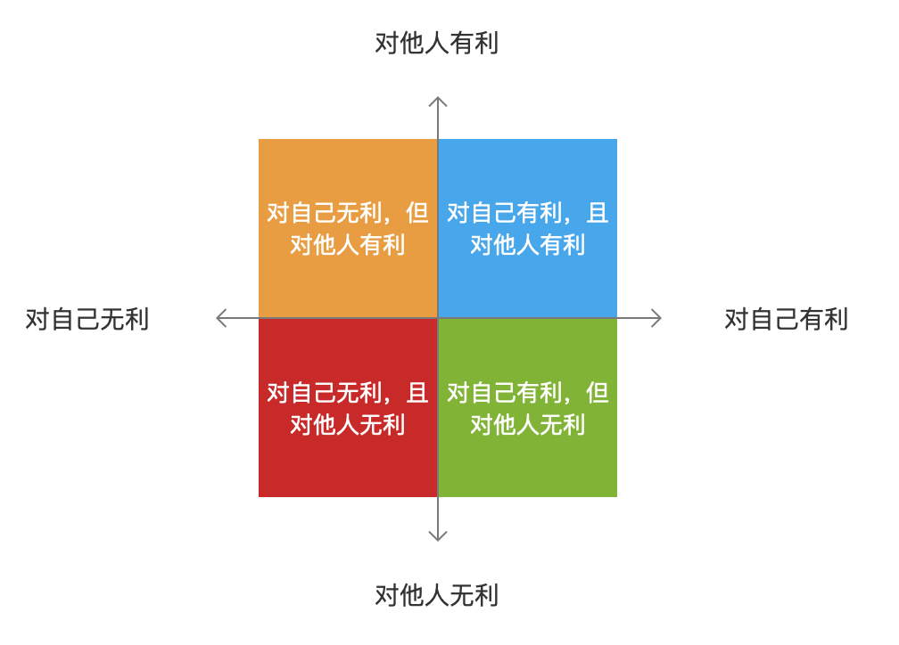
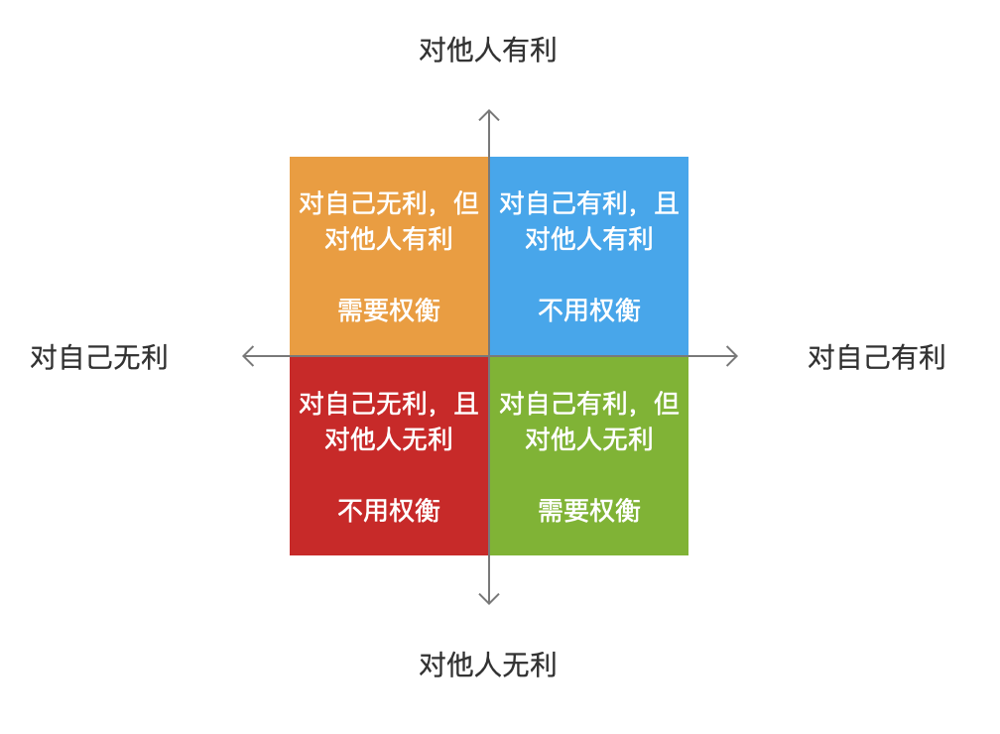
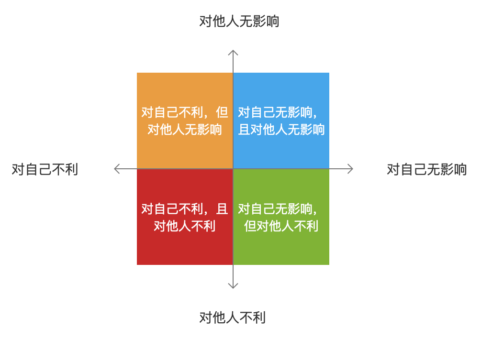

高智商的讨厌鬼
《奇葩说》第六季第一期大王和哲逸辩论「如果给你一个重新选择的机会，你愿意成为一个高智商的讨厌鬼吗？」，哲逸说“高智商的人才可以感知和察觉得到谁讨厌我，为什么讨厌我，从什么时候开始讨厌我”，一开始我对此不以为然，一次偶然的机会我深入去思考其中的逻辑，却发现此言不虚，当然，我们这里将会弱化“高智商”和“讨厌“这两个词的属性。
权衡矩阵
讨厌是一个指向性的词，是一种人与人之间的互动关系，人不会因为人本身被讨厌，只会因对别人产生的影响而得到一个被讨厌的反馈，而人对他人产生影响的方式就是做事，因此我们将论述的范围从「人被讨厌」限定为「人做事被讨厌」，以下我们将按照这个逻辑进行展开。
人做事会产生结果，产生的影响可以分为两种，有利和无利，作用的对象可以分为两个，自己和他人，由此我们可以得出一个「结果矩阵」：

- 对自己有利，且对他人有利的事情
- 对自己无利，但对他人有利的事情
- 对自己无利，且对他人无利的事情
- 对自己有利，但对他人无利的事情
其中我们会很自然地认为被人讨厌的类型是「对自己有利，但对他人无利的事情」，「对自己无利，且对他人无利的事情」。
但这是一个过于简化的模型，如果再往里面加入「收益」和「损失」这两个指标和「人是自私的」这个因素，我们可以将「结果矩阵」升级为「权衡矩阵」：

- 对自己有利，且对他人有利的事情，是不需要权衡的双赢的结果，尽量去做且个人有意愿去进行
- 对自己无利，但对他人有利的事情，是需要权衡的损己利人的结果，权衡的指标是你的直接损失和你因他人的收益而获得的间接收益
- 对自己无利，且对他人无利的事情，是不需要权衡的双输的结果，应该避免且个人有意愿去避免
- 对自己有利，但对他人无利的事情，是需要权衡的损人利己的结果，权衡的指标是你的直接收益和你因他人的损失而导致的间接损失
现在我们来看这个更复杂的矩阵会告诉我们什么？
「对自己有利，但对他人无利的事情」这个类型中，「讨厌」归属于「你因他人的损失而导致的间接损失」，但你会因为做这样的事情而有「直接收益」，当「直接收益」大于「间接损失」时，你明知道会被人讨厌，但你还是会去做。
「对自己无利，且对他人无利的事情」这个类型中，我们的分析结论是「应该避免且个人有意愿去避免」，我们理所当然地觉得没有人会做这种傻事吧？但问题却恰恰发生在这。
被人讨厌却不自知
为了回答这个问题，我们需要将权衡矩阵再进行细分挖掘。
无利其实还包括了两部分——无影响（=0）和不利（<0），我们可以将「权衡矩阵」中的「对自己无利，且对他人无利的事情」再扩展为一个「无利矩阵」：

- 对自己无影响，且对他人无影响的事情
- 对自己不利，但对他人无影响的事情
- 对自己不利，且对他人不利的事情
- 对自己无影响，但对他人不利的事情
这时再回到结论「应该避免且个人有意愿去避免」，我们可以很自然地知道对自己不利的中间两种情况是会避免的，而第一种情况对谁都不产生影响，也即对这个问题没有影响。
由此我们可以知道被人讨厌但不自知的事情就是「对自己无影响，但对他人不利的事情」，为什么会发生这种事情呢？我们有没有办法去避免？
为什么？怎么办？
其实这里可以回到自己和他人这个维度再去分析。
从自己的维度看，人是自私的，会对与自己有利益关系的事情有生物的应激性，对自己有利的事情会触发正向激励，对自己不利的事情会产生损失厌恶，因此激活判断能力自然而然的，但如果事情对自己没有影响，那么就相当于事件没有产生激活信号，判断也就会终止与此。
从对他人维度看，这本身就是一个需要换位思考（即如果他是我）的维度，换位思考是一个需要人主动思考（可能是快思考，也可能是慢思考）进行逻辑推理的过程（例：大前提——我们都是人，小前提——我不想被爽约，结论——他也不想被爽约），会消耗更多的心力（能量），这不是生物的本能，如果没有这方面的意识，或者这方面的意识不够强，则不会有这个维度的判断。
由以上两点可以得出，可知确实是需要有”高智商“才能觉知被讨厌的风险，然后去避免做出对自己不利且被人讨厌的事情，这里的”高智商“其实就是做事时习惯性激活换位思考的能力。
那么要如何去习得这种能力呢？
我认为可以通过外部的规则提醒和内心的刻意练习两个方向去共同作用，相信长久的努力可以将之培养成一种习惯。
这不是一件容易的事情，但绝对值得，共勉~
后话：对分析的再思考
在做以上的分析过程后，我又反思了这个分析过程，主要有三个阶段：
- 首先用系统思考描述「系统边界、系统角色和互动关系」
- 其次用结构化思考对互动关系的因子进行拆解
- 最后用矩阵分析将拆解的因子进行组合
这个过程发生得自然而然，反而让我好奇为什么会这样去分析？
首先我会将讨厌这个情绪进行抽象处理，讨厌是后置指向性的，因此他不会是一个人自己与自己的关系，应该与刺激源——也就是另一个人的互动关系，这是一个关系系统。
在这个系统中，后置指向性的关系会需要一个前置刺激，还原到场景中就是做的事情，然而事情本身不会产生作用，产生作用的是事情的结果。
这时候我想到结果会产生很多维度的影响，我需要把它理清楚，因此我选择对结果的维度进行拆解，得到两个维度——产生的影响和作用的对象，然后又可以继续拆解成有利、无利和自己、他人等MECE元素。
到了这一步，自然会发现这两个维度中两两独立的因子可以再进行组合，得出「影响」本身，如「对自己有利」，这就是一个二维四象限的矩阵。
由此往复，即得如此。